RUI: Das Layout-System von Marigold v18
Folgeartikel zu „Das visuelle Fundament von Marigold v18“. Die offenen Punkte für die Veröffentlichung stehen am Ende der Seite.
Im letzten Artikel ging es um Farben, Flächen und Schatten, also darum, wie unsere Oberflächen aussehen. Diesmal geht es eine Ebene höher: wie eine Seite überhaupt aufgebaut ist. Das ist der Teil von v18, der am meisten verändert, wie wir Screens entwerfen und bauen.
Ein Bild vorweg, das den ganzen Artikel zusammenfasst: erst die Räume, dann die Möbel. Der Rahmen einer Anwendung ist das Gebäude. Eine Seite ist ein Raum darin. Panels sind die benannten Bereiche im Raum. Und was in einem Bereich steht, sind die Möbel.
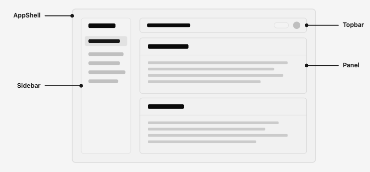
Der Artikel ist in drei Teilen aufgebaut. Teil 1 erklärt den Aufbau einer Seite und ist für alle interessant, die mit unseren Produkten arbeiten, auch ohne Design- oder Entwicklungshintergrund. Teil 2 geht ins Detail und richtet sich an Designerinnen und Designer. Teil 3 erklärt, warum wir uns so entschieden haben, inklusive der Stellen, an denen wir uns bewusst gegen den Standard anderer Systeme gestellt haben.
Teil 1: Wie eine Seite in Marigold aufgebaut ist
Vorher gab es kein gemeinsames Modell
Bisher hat jedes Produkt seinen Seitenaufbau selbst erfunden. Es gab Bausteine für Buttons, Felder und Tabellen, aber keinen für „eine Seite“. Also hat jeder Screen die Grundfragen neu beantwortet: Wo steht der Titel? Wie weit ist der Abstand nach oben? Kommt die Hauptaktion oben rechts hin oder unten? Wie werden Abschnitte voneinander getrennt, und heißen sie überhaupt irgendwie?
Das Ergebnis sieht man hier. Unter dem Titel liegt ein Stapel Bedienelemente: ein Schalter, ein Suchfeld, eine Schnellwahl, dazwischen die Hauptaktion. Danach folgt eine Tabelle, die direkt auf dem Seitenhintergrund liegt. Nichts davon ist als Bereich benannt.
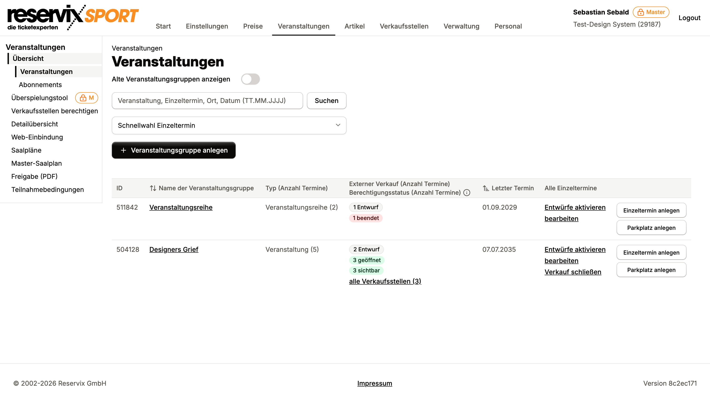
Das war kein Fehler, den irgendwer gemacht hat. Es gab schlicht kein gemeinsames Modell, an dem man sich orientieren konnte, also hat jedes Team eins erfunden. Genau diese Lücke füllt v18.
Der Rahmen bleibt, der Inhalt wechselt
Ganz außen sitzt der App-Rahmen: Navigation links, eine Kopfzeile oben, der Inhalt darunter. Der Rahmen bleibt stehen, während man durch die Anwendung navigiert. Nur der Inhaltsbereich wechselt.
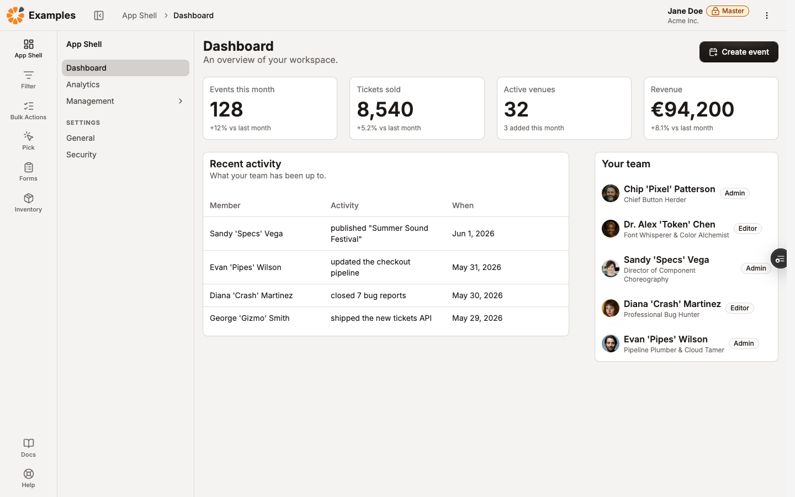
Die Navigation hat zwei Ebenen: eine schmale Leiste mit Symbolen für die Hauptbereiche und daneben eine Spalte mit den Links des aktuellen Bereichs. Klappt man die Spalte zu, bleiben die Symbole stehen. Man gewinnt Platz, ohne die Orientierung zu verlieren.
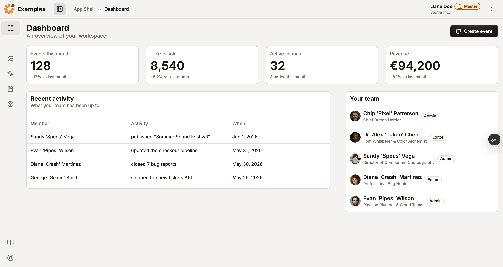
Auf schmalen Bildschirmen wird die Navigation zu einer Fläche, die sich über die Seite legt, und der Inhalt läuft einspaltig darunter.
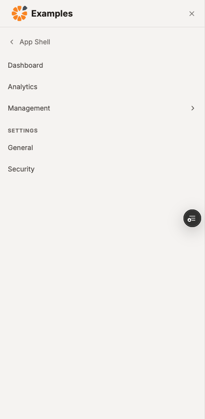
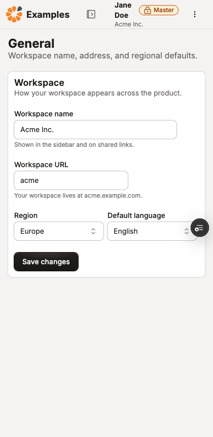
Wichtig ist außerdem etwas, das man nicht sieht: Die Seite scrollt wie eine ganz normale Webseite, nicht in einem eigenen Kasten. Deshalb funktionieren Dinge, die man von jeder Website erwartet: Suchen mit Cmd+F, der Zurück-Button, Links, die an die richtige Stelle springen.
Die Seite: ein Titel, eine Hauptaktion
Im Rahmen liegt die Seite. Jede Seite hat denselben Anfang: einen Titel, der sagt, wo man ist, optional einen Satz zur Erklärung, und rechts daneben die eine Aktion, um die es auf dieser Seite hauptsächlich geht.
Zwei Dinge stehen bewusst nicht im Seitenkopf. Der Pfad, an dem man ablesen kann, wo man sich in der Anwendung befindet, gehört zum Rahmen, nicht zur Seite. Und der Status eines Objekts, also etwa „aktiv“ oder „gesperrt“, steht im Inhalt, nicht neben dem Titel. Bei Detailseiten hat sich dafür eine schmale Spalte rechts etabliert, die den Status und die wichtigsten Fakten trägt.
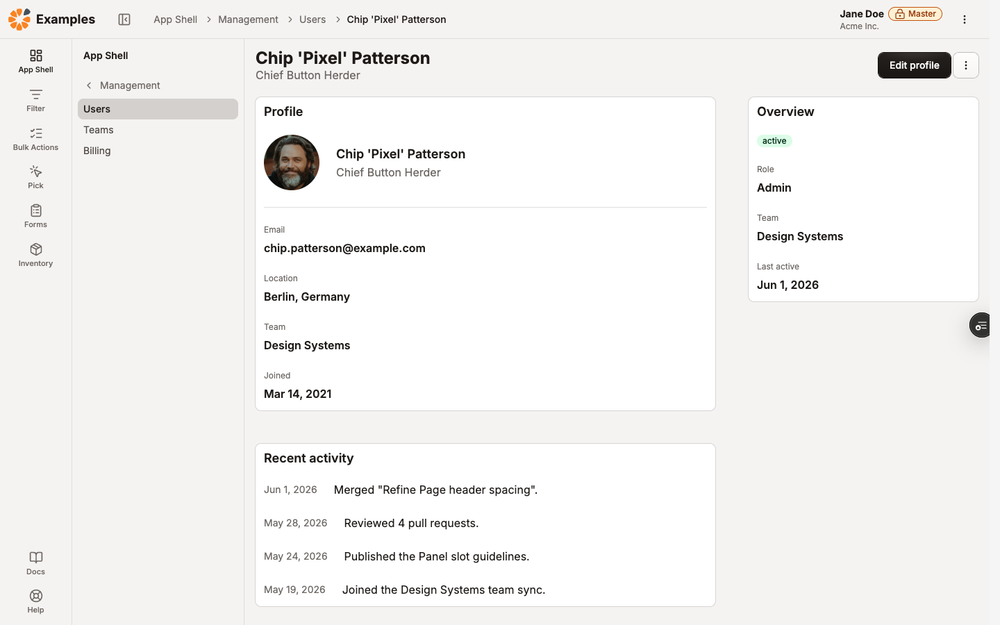
Panels: benannte Bereiche
Unter dem Seitenkopf liegen Panels. Ein Panel ist ein benannter Bereich, der ein Thema bündelt: „Basisdaten“, „Tickets“, „Abrechnung“. Eine typische Seite besteht aus einer Handvoll davon. Das macht aus einer langen Liste von Feldern eine Seite, die man überfliegen kann: Man liest die Überschriften, findet seinen Bereich und liest nur dort weiter.
Der Unterschied zur Karte ist wichtig, weil beide gleich aussehen: Eine Karte steht für einen Eintrag, der sich wiederholt, etwa eine Veranstaltung in einer Liste. Ein Panel gibt es pro Bereich genau einmal. Karten wiederholen sich, Panels nicht.
Ein Team hat schon angefangen
Das Muster gab es intern schon, bevor es einen Namen hatte. Auf der Seite zum Bearbeiten eines Einzeltermins ist genau das gebaut: Abschnitte mit Titel, jeder mit einem Thema, jeweils auf einer eigenen weißen Fläche.
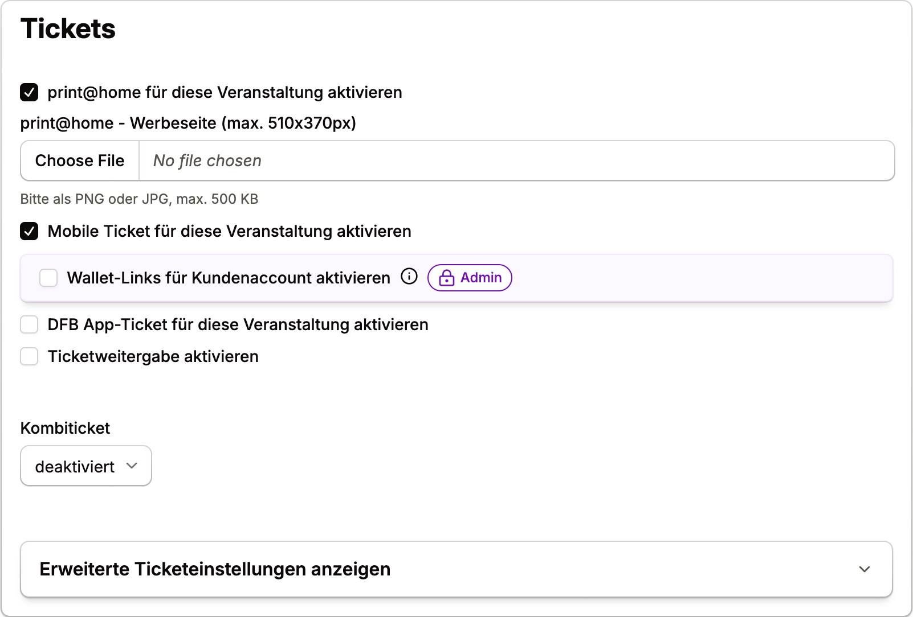
Technisch ist dieser Abschnitt eine Card, denn ein Panel gab es damals nicht. Das Team hatte also nicht die Wahl und hat die Card zum Seitenabschnitt umgebaut. v18 gibt dem Ding endlich seinen richtigen Namen und den passenden Aufbau.
Dasselbe im Überspielungstool, dort mit zwei Bereichen nebeneinander. Beide haben einen Titel, eine Zeile mit der Anzahl darunter, ihre eigenen Filter und einen leeren Zustand mit einem Hinweis, was zu tun ist.
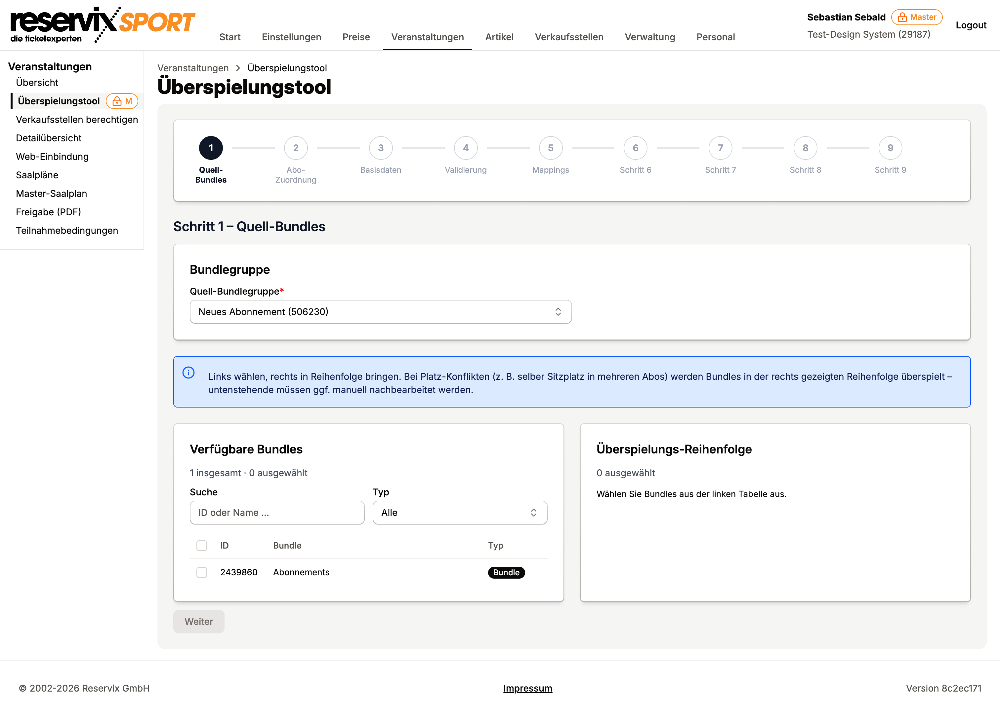
Diese Beispiele sind der eigentliche Beleg dafür, dass v18 nichts Neues erfindet. Mehrere Teams sind unabhängig voneinander bei derselben Form gelandet, weil das die Form ist, die die Aufgabe verlangt. Das Layout-System schreibt sie auf und gibt sie allen anderen mit.
Was das im Alltag bringt
- Weniger Erklärbedarf. Wer einen Screen verstanden hat, versteht die anderen auch. Der Rahmen springt nicht von Produkt zu Produkt.
- Bereiche haben Namen. Im Support kann man sagen „im Bereich Tickets“ statt „ungefähr in der Mitte weiter runter scrollen“.
- Barrierefreiheit fällt mit ab. Screenreader navigieren genau über solche benannten Bereiche und über die Überschriften-Struktur einer Seite. Beides entsteht automatisch, wenn ein Bereich einen Titel bekommt. Das ist auch für Ausschreibungen relevant, in denen Barrierefreiheit abgefragt wird.
- Neue Screens gehen schneller. Niemand baut den Seitenrahmen noch mal neu.
Wann kommt das?
Beim Aussehen war es einfach: v18 kommt Mitte August, danach sieht alles frischer aus, und funktional ändert sich nichts.
Beim Layout ist es anders. Der neue Aufbau kommt Screen für Screen, nicht mit einem Schlag. Ein Produkt kann Panels einsetzen und weiterhin im alten Rahmen laufen, so wie es die Einzeltermin-Seite heute tut. Es gibt also keinen Tag, an dem plötzlich alle Seiten anders aussehen, sondern eine Reihe von Umbauten über die nächsten Releases. Wo umgebaut wird, ändern sich Anordnung und Abstände sichtbar, weil genau das der Punkt ist.
Wer nur wissen wollte, wie eine Seite aufgebaut ist, kann hier aufhören. Der Rest geht ins Detail.
Teil 2: Was das für den Entwurf bedeutet
Panel für die Gliederung, Primitive für alles darin
Die Arbeitsregel ist kurz: Panel gliedert die Seite, alles innerhalb wird mit Layout-Primitiven angeordnet. Primitive sind unsichtbare Bausteine mit einer Aufgabe: Stack stapelt untereinander, Inline reiht nebeneinander, Columns teilt in Spalten, Inset gibt Innenabstand.
Panel besitzt die Fläche, den Titel und den Rahmen um den Inhalt. Es bestimmt nicht, wie der Inhalt darin angeordnet ist. Das ist die Aufgabe der Primitive, und die funktionieren innerhalb eines Panels genauso wie außerhalb.
Daraus folgt eine Regel, die im Entwurf oft übersehen wird: Ein Element bringt keinen Außenabstand mit. Ein Button weiß nicht, was neben ihm steht. Der Abstand zwischen zwei Elementen wird immer von dem Baustein entschieden, der beide enthält. Wer im Entwurf Abstände an ein einzelnes Element klebt, beschreibt etwas, das das System nicht bauen kann, ohne die Wiederverwendbarkeit aufzugeben.
Panel oder Card?
Die Frage kommt regelmäßig, weil beide gleich aussehen: weiße Fläche, feiner Rahmen, kein Schatten. Der Unterschied liegt nicht im Aussehen, sondern in der Rolle.
Die Prüffrage: Wiederholt sich das Element beim Scrollen? Eine Veranstaltung, ein Produkt, ein Teammitglied kommen mehrfach vor, jeweils in derselben Form. Das ist eine Card. „Basisdaten“ oder „Abrechnung“ gibt es pro Seite einmal, mit eigenem Titel und eigenen Aktionen. Das ist ein Panel.
Aus der Rolle folgt der Rest: Panels tragen Titel, die zur Gliederung der Seite gehören, und werden dadurch zu Bereichen, die Screenreader ansteuern können. Cards sind Einträge in einer Sammlung und brauchen das nicht.
Breite wird pro Fläche entschieden, nicht pro Seite
Eine Seite gibt keine Maximalbreite vor. Stattdessen entscheidet jede Fläche für sich: Formularabschnitte werden auf eine angenehme Lesebreite begrenzt, datenreiche Flächen wie Tabellen laufen über die volle Breite.
Das klingt nach einem Detail, ist aber der Unterschied zu Systemen, die einen Schalter auf Seitenebene anbieten, „schmal“ oder „volle Breite“. Eine echte Seite mischt beides: ein kurzes Formular oben, darunter eine breite Tabelle. Ein Schalter auf Seitenebene erzwingt eine Entscheidung für die ganze Seite und liegt dann bei der Hälfte des Inhalts daneben.
Auf der Einzeltermin-Seite kann man das nachsehen: Die Formularabschnitte sind auf eine Lesebreite begrenzt, obwohl die Seite viel breiter ist. Genau das ist gemeint.
Die fünf Seitenformen
Fast jede Seite in einer Anwendung ist eine von fünf Formen. Alle bestehen aus denselben Bausteinen. Unterschiedlich ist nur, wie viele Flächen es gibt, wie sie angeordnet sind und wie breit sie laufen.
| Form | Wofür | Aufbau |
|---|---|---|
| Liste | Eine Sammlung durchsuchen und filtern | Ein Panel über die volle Breite mit Filtern und Tabelle |
| Detail | Ein Objekt mit Status und Kennzahlen | Zwei Spalten: Inhalt links, schmale Übersicht rechts |
| Formular | Etwas anlegen oder bearbeiten | Panels auf Lesebreite, Hauptaktion am Ende |
| Einstellungen | Konfiguration in Gruppen, oft mit Tabs | Tabs unter dem Seitenkopf, darin gestapelte Formular-Panels |
| Übersicht | Kennzahlen auf einen Blick | Panels und Cards in Spalten oder als Raster |
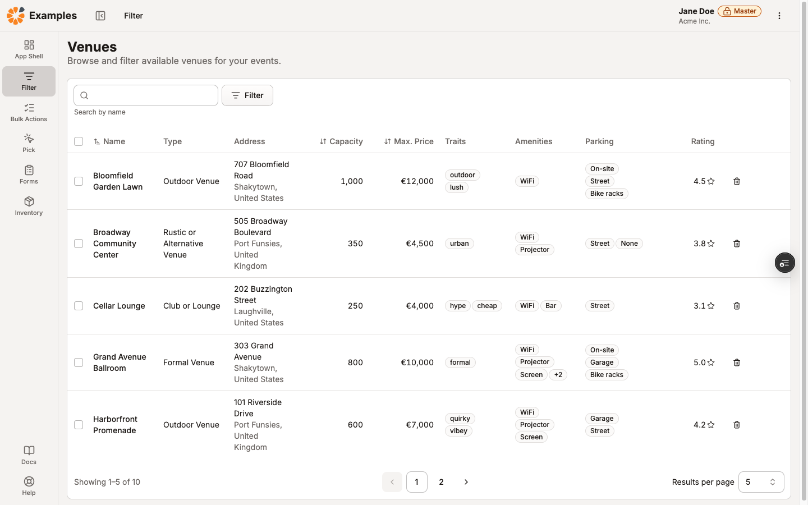
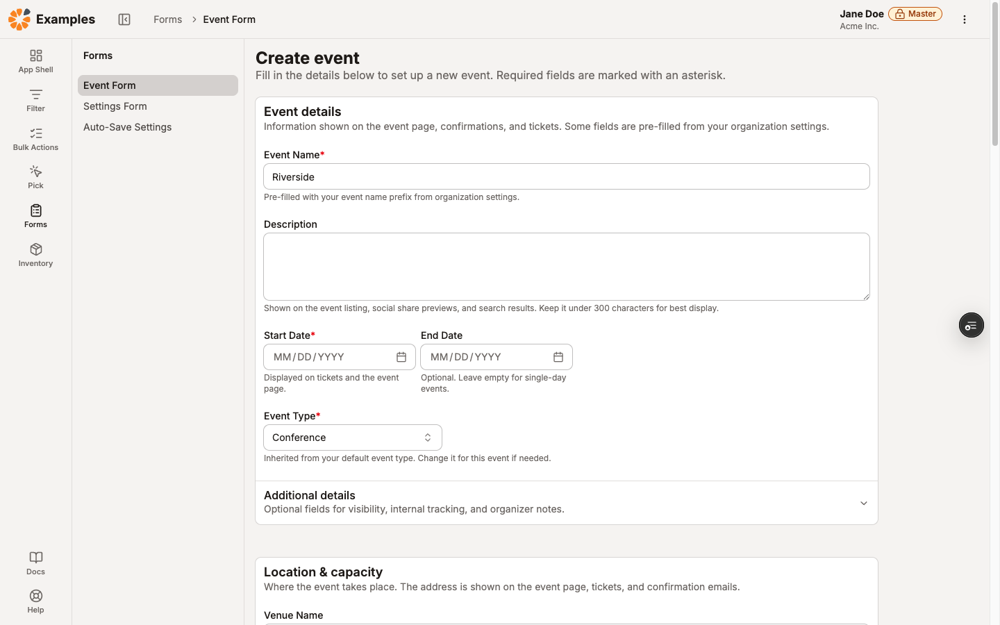
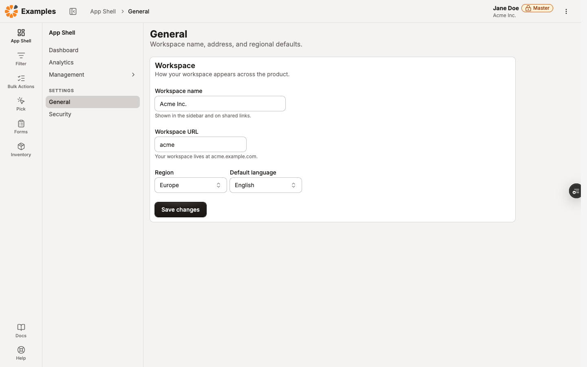
Die Detailform lohnt es sich zu verinnerlichen, weil sie am häufigsten falsch gebaut wird. Der Inhalt steht links, Status und Kennzahlen in einer schmalen Spalte rechts, etwa zwei Drittel zu einem Drittel. Auf schmalen Bildschirmen fällt die rechte Spalte unter die linke.
Die schmale Spalte verdient ihren Platz aber nur, wenn es wirklich etwas zusammenzufassen gibt: Status, Verantwortliche, wichtige Daten, Anzahlen. Steht dort am Ende nur ein einzelnes Etikett, wirkt sie wie eine leere Randspalte. Dann gehören die Angaben in den Inhalt.
Was in die Übergabe gehört
Für die Übergabe an die Entwicklung heißt das: Die Struktur ist die eigentliche Information. Also nicht Abstände in Pixeln, sondern:
„Eine Seite mit dem Titel Einzeltermin bearbeiten, darunter vier Panels: Basisdaten, Tickets, Besucherinformation, Finanzen. Speichern und Abbrechen liegen außerhalb der Panels am Seitenende.“
Damit ist alles gesagt, was gebraucht wird. Abstände, Innenabstände, Überschriftenebenen und Umbruchverhalten kommen aus dem System und müssen nicht mitgeliefert werden.
Teil 3: Warum wir uns so entschieden haben
Vier Entscheidungen fallen auf, wenn man Marigold mit anderen Systemen vergleicht. Alle vier sind bewusst getroffen.
Keine Maximalbreite auf Seitenebene. Begründung siehe oben: Eine Seite mischt schmalen und breiten Inhalt, deshalb entscheidet die Fläche und nicht die Seite.
Der Pfad gehört zum Rahmen, nicht zum Seitenkopf. Er beschreibt, wo eine Seite in der Anwendung liegt, nicht, was diese Seite ist. Deshalb sitzt er oben in der Kopfzeile, die beim Navigieren stehen bleibt, und nicht im Titelblock der Seite, wie es viele Systeme machen.
Kein Platz für Status im Seitenkopf. Der Seitenkopf trägt Titel, Beschreibung und die eine Hauptaktion. Nimmt man Status-Etiketten und Kennzahlen dazu, verschwindet die Aktion, wegen der die Seite geöffnet wurde, in einer Reihe von Kleinteilen. Deshalb gibt es dafür bewusst keinen Platz, sondern die schmale Übersichtsspalte.
Die Seite scrollt, nicht ein Kasten darin. Ein eigener Scroll-Bereich im Inhalt sieht ordentlich aus und kostet lauter Kleinigkeiten, die Browser sonst geschenkt mitbringen: Suchen im Text, Zurückkehren an die vorherige Scroll-Position, Sprungmarken, das Zusammenklappen der Adressleiste auf dem Handy.
Der Nebeneffekt, der am meisten wert ist
Panels sind nicht nur optische Abschnitte. Ein Panel mit Titel wird zu einem benannten Bereich im Dokument, und sein Titel wird zu einer Überschrift auf der richtigen Ebene: Der Seitentitel ist die erste Ebene, jedes Panel die zweite, ein eingeklappter Teil darin die dritte.
Diese Struktur ist genau das, worüber Screenreader navigieren. Bisher musste das jemand bewusst herstellen, und in der Praxis passierte es selten. Jetzt entsteht es, weil jemand einem Bereich einen Namen gibt, und das ist eine inhaltliche Entscheidung, keine technische.
Deshalb ist es auch ein Argument nach außen: Wer nach Barrierefreiheit fragt, fragt unter anderem nach genau dieser Struktur.
Eine Stelle, die noch nicht entschieden ist
Ein Punkt ist offen, und es lohnt nicht, das zu verstecken. Sehr lange Formulare bestehen häufig aus vielen eingeklappten Abschnitten. Die untere Hälfte der Einzeltermin-Seite sieht so aus:
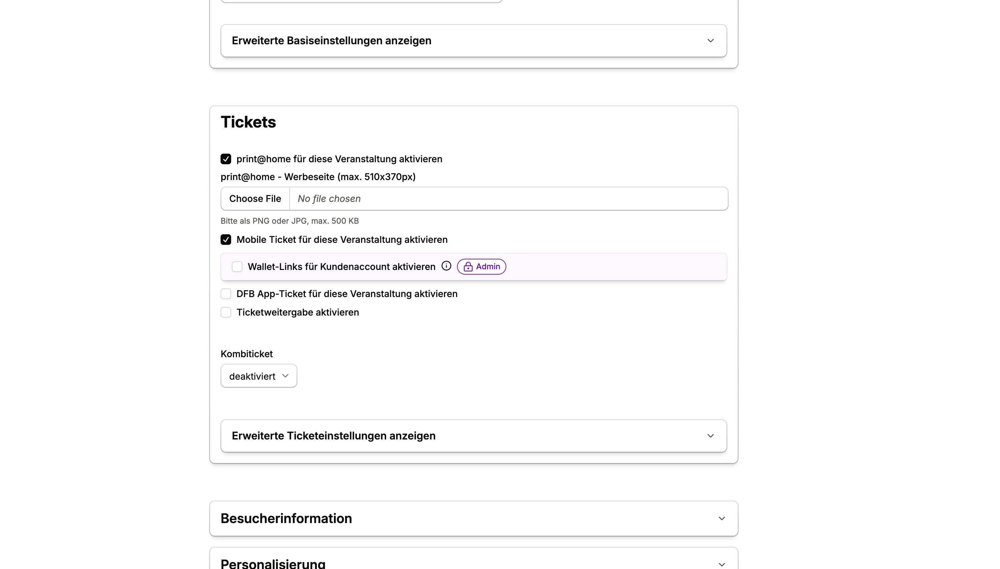
Das ist praktisch, weil man sonst endlos scrollt. Gleichzeitig ist es eine Seite, die man erst aufklappen muss, um zu sehen, was auf ihr steht. Unsere Empfehlung ist bisher: pro Panel höchstens ein eingeklappter Teil, und zwar für den Rand des Themas, nicht für das Thema selbst. Für eine Reihe gleichrangiger Klapp-Abschnitte gibt es ein eigenes Element, das Accordion.
Für Formulare in dieser Länge ist die Frage aber ehrlich gesagt noch nicht beantwortet. Wer gerade so eine Seite baut: Sprecht uns an, dann lösen wir das am konkreten Fall statt in der Theorie.
Was noch nicht fertig ist
Rahmen und Seite sind in v18 als Beta gekennzeichnet. Sie funktionieren und sind im Einsatz, die Schnittstelle kann sich aber noch ändern. Panel ist stabiler und die naheliegende Stelle, um anzufangen: Man kann eine bestehende Seite in benannte Bereiche gliedern, ohne den Rahmen anzufassen.
Zum Weiterlesen
Die vollständige Referenz steht in der Beta-Dokumentation: Layouts für die Grundlagen, App Frame für den Aufbau einer Anwendung, Panel für alle Details zu Titel, Aktionen, Varianten und Abständen. Die Beispielseiten unter Examples sind vollständige Screens, durch die man klicken kann.
Zum Schluss dieselbe Beobachtung wie beim visuellen Fundament: Ein gutes Layout fällt nicht auf. Man merkt es daran, dass man auf einer neuen Seite nicht überlegen muss, wo man ist und was man als Nächstes tun soll.
- Team der Einzeltermin-Seite und des Überspielungstools vorab informieren, beide werden namentlich als positives Beispiel genannt.
- Screenshots stammen aus dem Test-Mandanten „Test-Design System“ auf Stage, keine echten Kundendaten.
- Doku-Links zeigen auf die Beta-Deployment-URL und müssen zum Launch auf marigold-ui.io umgestellt werden.
- Master- und Admin-Markierungen sind auf zwei Screenshots sichtbar, werden im Text aber bewusst nicht erklärt.
- Namen der beiden Teams im Abschnitt „Ein Team hat schon angefangen“ ergänzen.